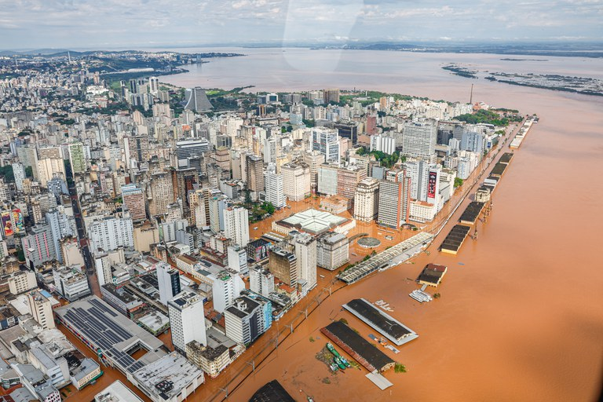

As condições no Rio Grande do Sul
Recentemente, o estado do Rio Grande do Sul tem sofrido vários problemas com enchentes, há vários relatos de pessoas que perderam suas casas.
Estamos vivendo uma era onde todos precisamos nos unir para tentar amenizar a vida de tantas pessoas que acabaram de perder tudo. Nesse documento
Nesse documento estaremos apresentando relatos, experiências vividas e a realidade que ocorre no estado, além de programas a doar.

- O que está acontecendo?
- Relatos
- Onde doar
- Cuidar com golpes
- Não posso doar dinheiro, o que fazer?
No Sul, recentemente houveram várias cidades que estão sendo afetadas por diversas enchentes em decorrência do transbordar dos rios, são situações de risco onde
pessoas perdem as suas casas, os seus pertences e, em alguns casos, as suas vidas. A gravidade da situação é enorme, uma vez que essa enchente tem ficado
tão perigosa que muitas pessoas estão perdendo suas casas, a água entra em um fluxo tão forte que acaba afundando objetos pesados como carros, os impossibilitando
de andar. Acaba destruindo casas com paredes fracas, como o gesso, onde a água a empurra pra fora. Eletrônicos, comidas, entre outros objetos que ficaram submersos
pararam de funcionar, estragaram ou simplesmente foram levados pela correnteza. Camas, cômodos da casa, paredes, roupas, tudo que estava jogado pela casa está embarrado.
Esse alerta está em vários locais, alguns onde lojas inteiras foram submersos com todos os seus produtos e estoque junto. Mercados e estabelecimentos estão em falta de
mercadoria, já que os caminhões demoram a conseguir entregar os produtos. Pessoas estão sendo levadas a refúgios, algumas não conseguem e ficam no teto de suas casas,
algumas perderam muitas coisas que terão que repôr sozinhas, muitas ruas esburacadas e alagadas por conta da água.
- Tatiane
Tatiane, do bairro Sarandi, em Porto Alegre, relata que saiu em uma noite apenas com as roupas de si e do seu filho, enquanto sua mãe estava em casa no quinto andar.
Após a água subir bastante, sua mãe a ligou pedindo para ser resgatada, e, quando estavam chegando para buscá-la, a água estava em seus joelhos já. Quando foi dar depoimento,
ela já não sabia como estava a sua casa, ou se ainda tinha uma. Ela morava com seu marido e o seu filho, que era uma criança ainda, ambos estavam preocupados sobre como lidar
com essa situação, no depoimento, Tatiane não conseguia esconder suas lágrimas, por ser uma situação extremamente desesperadora. Ela não sabia se havia sobrado algo lá. Em seu
bairro, relataram vários casos de saqueamentos e roubos, então a desesperadora sensação de chegar em casa e não ter mais nada a apavora. O seu filho queria poder ir ver como eles
estavam, mas o casal não deixou, por conta do risco oferecido. Caso o seu filho fosse, seria mais uma coisa para o casal se preocupar, e isso é uma realidade que várias pessoas enfrentaram
com seus parentes; o medo de perder alguém que você ama, não ter contato com a pessoa ou algo assim é desesperador, mas infelizmente, não dá pra se arriscar para ir resgatá-la sem o equipamento
necessário, a coisa mais recomendada a usar são barcos ou helicópteros, por isso, caso você se encontre nessa situação, evite de ir ao resgate de carro ou a pé, o risco oferecido é enorme,
prefira chamar alguém que tenha o equipamento e esteja melhor preparada para um resgate, como as pessoas voluntárias que tem ido em várias cidades de barcos para resgatar moradores ilhados.
Os melhores meios de ajudar no resgate de alguém é contatar esses grupos, ou entidades como bombeiros, enviar a localização da pessoa necessitada e ajudar esses grupos a encontrá-la. Ajude a pessoa
também acalmando-a, ajudando ela a procurar por locais de refúgio para as pessoas que sofreram na enchente, ajude-a com suprimentos e ajude-a a ganhar voz, divulgando seu relato.
- Neila
Neila, uma moradora do mesmo bairro, decidiu esperar a água baixar, porém quando viu que ela não estava abaixando, e sim apenas subindo, ela fugiu rápido de sua casa, apenas estando com suas roupas
e deixando seus animais para trás, por conta do desespero. Ela então aguarda o resgate de seus bichinhos, o qual irá se iniciar uma investigação baseado em seus nomes e no seu endereço geral,
o que também é um grande desespero, pessoas com animais que já não curtem água tendo que passar por esse tipo de situação. O melhor a se fazer é relatar aos bombeiros/voluntários o nome e o endereço de
seus bichinhos, para que possam ser investigados e resgatados.
- Twyla Mousytea [Dream Virtual]
Twyla, em seu depoimento, afirma que não foi afetada a ponto de perder algo ou alguém na enchente, porém ela se preocupava com amigos e conhecidos próximos que ficavam em áreas de extremo risco. A situação
continuava piorando a cada dia, até que a enchente chegou em sua cidade, ela não conseguia ficar tranquila, estava sempre doando, ajudando o povo, mas ficava com medo de que acontecesse algo com seus familiares
e amigos próximos, no meio tempo, a mesma começou a fazer lives arrecadando para a causa, ela juntou na live 10 reais, todo centavo importa, e ela ainda estava conseguindo conscientizar sobre a situação, embora
houvessem alguns imprevistos, como quedas de energia, acidentes no bairro e afins. Em suas palavras: "Em geral, é um cenário extremamente assustador, repleto de medo, incertezas e insegurança. Mas a população está
unida, se ajudando como pode, se reerguendo e seguindo."
Caso queira ajudar com suas lives, seu link da twitch é
Twyla Mousytea no Youtube e o seu livepix é
Livepix Twyla Mousytea

SOS Rio Grande do Sul é um canal de doações do governo do estado do RS reativado por conta das enchentes, é um canal que se pode doar diretamente via Pix, as informações seguem abaixo:
CNPJ 92.958.800/0001-38
Nome: Banco do Estado do Rio Grande do Sul / Associação dos Bancos no Estado do Rio Grande do Sul
Atenção: O nome da conta que aparece deve ser "SOS Rio Grande do Sul", e a instituição bancária é o Banrisul.
Caso não vá doar via livepix, é possível doar roupas, alimentos, camas e afins para o RS, em pontos de coleta específicos, várias igrejas por exemplo estão aceitando doações desses materiais
é possível enviar suas doações pelos correios caso seja necessário.
- Não posso doar dinheiro, o que posso fazer?
Quando não se tem dinheiro para doar, não há problemas. Caso queira ajudar nas campanhas, você pode doar pelos canais oficiais roupas, alimentos, agasalhos, e outros objetos que já não usa
para as pessoas afetadas poderem usufruir. Caso não tenha condições de doar isso, não há problema também, uma coisa que pode ser feita e ajuda demais é o compartilhamento, compartilhas os
relatos das pessoas, fazer campanhas para arrecadar fundos para essas pessoas, conscientizar sobre para que todos tomem mais cuidado, ter empatia nesse momento difícil, acalmar as pessoas
sobre a situação, chamar resgate para aqueles ilhados, trazer atenção para a causa.